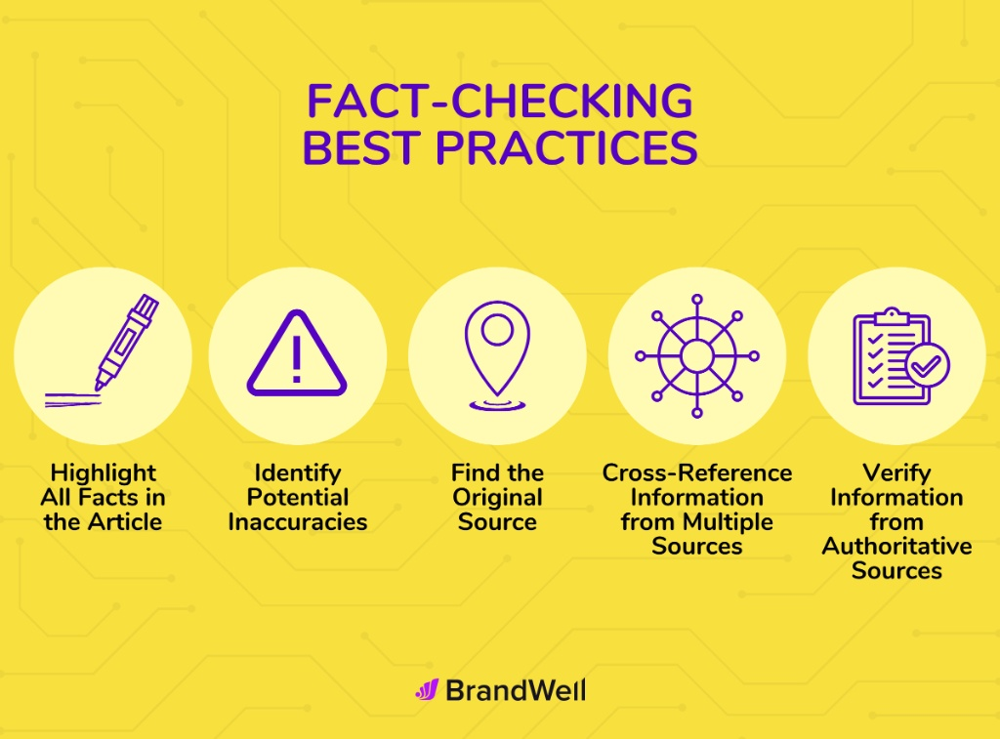
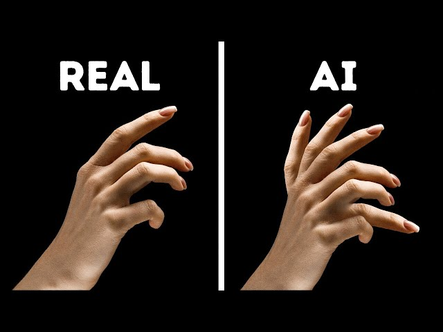
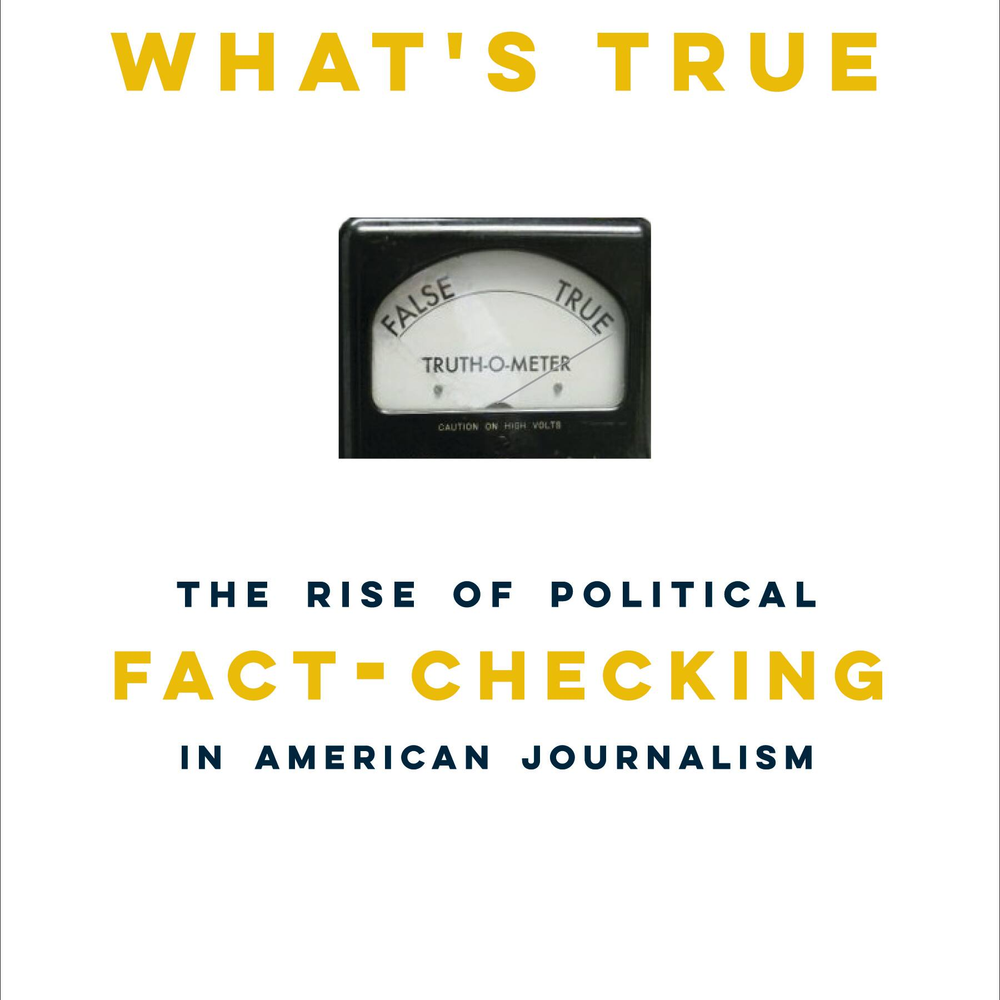

What is AI-Generated Media?
9 Topics · Moyo
What It Means
Definition of AI-Generated Media
What exactly counts as AI-generated media? This foundational
article breaks down the concept clearly — covering what it is,
where it came from, and why understanding it matters for
everyday media consumers.
Types
Types of AI Media (Images, Video, Audio, Text, Chatbots)
A guided tour of the five major categories of AI-generated
content — from photorealistic images and synthetic video to
cloned audio, AI-written text, and conversational chatbots.
Comparison
Difference Between AI Content and Real Content
Side-by-side breakdowns of what separates machine-generated
media from authentic human-created content — and why the gap is
narrowing faster than most people realize.
Everyday AI
How AI is Used in Everyday Applications (Chatbots, Filters,
Recommendations)
From the face filters on your phone to the playlists curated for
you and the chatbots answering your questions — AI-generated
media is already woven into daily life.
Pros
Advantages of AI-Generated Media
AI-generated content can lower costs, democratize creativity,
and open new doors for accessibility and expression. A
fair-minded look at the genuine upsides.
Cons
Disadvantages of AI-Generated Media
Misinformation, job displacement, loss of trust, and ethical
blind spots — an honest accounting of the downsides that come
with the rise of synthetic media.
Trends
Why AI Media is Becoming Popular
Cheaper tools, faster generation, viral demand for content —
unpacking the forces driving the explosive growth of
AI-generated media across every platform.
Deep Dive
Human vs AI Content Comparison
A structured comparison of human and AI content across
creativity, accuracy, emotional depth, and speed — exploring
where each excels and where each falls short.
Real-World Examples
Examples of AI Media in Daily Life
Concrete, relatable examples of AI-generated media you likely
encounter every day — from news thumbnails and social media
posts to smart home assistants and product images.
How AI Creates Media
8 Topics · Tagama
Foundations
AI Model Training and Data Sources
Before AI can generate anything, it must learn. Explore how AI
models are trained on massive datasets — and what the choice of
training data means for the quality, bias, and risks of
generated content.
Image Generation
How AI Generates Images
From diffusion models to GANs — a clear explanation of how
modern AI turns a text prompt or seed image into a
photorealistic or artistic output in seconds.
Video Generation
How AI Generates Videos
Video generation is the frontier of synthetic media. Understand
the models and pipelines behind AI-generated video clips — from
short social content to near-broadcast-quality footage.
Audio Generation
How AI Generates Audio (Voice Cloning, Music)
Modern AI can clone a voice from just a few seconds of audio —
and compose entire music tracks from scratch. Learn how these
systems work and what makes them so convincing.
Text Generation
How AI Generates Text
Large language models predict the next word — over and over — to
produce articles, stories, emails, and more. A plain-language
explanation of how transformer-based text AI works.
Deepfakes
Deepfake Technology Explained
A technical but accessible breakdown of how deepfakes are made —
from face-swapping encoders to lip-sync models — and why they
have become so difficult to detect reliably.
Under the Hood
Role of Machine Learning in Media Creation
Neural networks, loss functions, training loops — a deeper look
at the machine learning mechanisms that power every form of
AI-generated media, explained without jargon overload.
Limitations
Limitations of AI Media Generation
AI still struggles with hands, consistent faces, factual
accuracy, and long-form coherence. Understanding these
limitations helps you spot AI-generated content in the wild.
AI-Generating Tools
7 Topics · Carbonell
Tool Roundup
Popular AI Tools in 2026
An overview of the most widely used AI-generating tools across
image, video, audio, and text. Check out what they do, who uses
them, and what you should know before you try them.
Image Tools
Image Generator Tools
A guide to the leading AI image generators — comparing their
strengths, output styles, accessibility, and the types of
synthetic images each is best known for producing.
Video Tools
Video Generator Tools
From short-form social clips to longer synthetic footage — an
overview of the AI video tools reshaping content creation and
the risks they introduce for media verification.
Audio Tools
Audio Generator Tools
Voice cloning platforms, AI music composers, and text-to-speech
tools — a guide to the audio generators changing how sound is
produced, and the scam risks they present.
Text Tools
Text Generator Tools
Chatbots, essay writers, news generators — a breakdown of the
major AI text tools, what they produce, and how to recognize
writing that came from a machine rather than a person.
Free Tools
Free AI Tools
You don't need a paid subscription to generate synthetic media —
or to detect it. A practical guide to the best free AI tools
available in 2026 for both creation and verification.
Detection Tools
AI Detection Tools Overview
An overview of tools designed to identify AI-generated content —
how they work, how accurate they really are, and how to use them
as one part of a broader verification strategy.
Detecting AI-Generated Content
10 Topics · Bascos

Verification Guide
Step-by-Step Guide to Verifying Digital Media
A practical, beginner-friendly checklist for verifying images,
videos, and audio before you share or believe them — no
technical background required. Built for everyday media
consumers.

Visual Clues
Common Signs of AI-Generated Images, Audio, and Video
Distorted hands, unnatural blinking, robotic cadence — the
telltale artifacts and inconsistencies that signal synthetic
media across all three formats.
Image Verification
Signs a Viral Image Might Be Fake
Before you share that striking photo, run through these red
flags — from impossible lighting and blurred backgrounds to
context mismatches and suspicious metadata.
Video Verification
Signs a Viral Video Might Be Fake
Unnatural mouth movement, mismatched audio, inconsistent
shadows, and frame glitches — how to pause, rewind, and
scrutinize video content before amplifying it.
Digital Forensics
Metadata Analysis for Media Verification
EXIF data, creation timestamps, GPS coordinates, and compression
artifacts — how metadata embedded in media files can reveal or
confirm manipulation.
Search Techniques
Reverse Image Search Techniques
How to use reverse image search to trace where a photo
originally came from — and what it means when a viral image
can't be traced to any authentic source.
Tool Limitations
Limitations of AI Detection Tools
No detector is perfect. Understand the false-positive rates, the
adversarial evasion techniques, and the real-world conditions
under which even the best tools fail.
Provenance
Watermarking in AI Media (Visible and Invisible)
How visible labels and cryptographic invisible watermarks are
being used to tag AI-generated content at the source — and why
they're not yet a complete solution.
Cross-Verification
Comparing Multiple Sources for Verification
Why you should never rely on a single source — and how to
efficiently triangulate across credible outlets, archives, and
community fact-checkers when verifying contested media.

Professional Methods
Fact-checking Methods Used by Organizations (Snopes, PolitiFact)
How professional fact-checkers at organizations like Snopes and
PolitiFact investigate viral claims — the tools, standards, and
workflows you can adapt for your own media diet.
AI Risks, Scams, and Misinformation
9 Topics · Bobiles
Misinformation
Dangers of AI-Generated Misinformation
AI enables the production of false content at a scale and speed
never before possible. A frank look at the documented real-world
harms — from public health crises to election interference.
Key Concepts
Misinformation vs Disinformation
Not all false information is equal. The difference between
misinformation (false but not intentional) and disinformation
(deliberately deceptive) matters for understanding AI's role in
each.
Scams
AI Voice Cloning Scams
Criminals are calling families using AI-cloned voices of their
loved ones. How these scams work, what they target, and the
exact steps you should take if you receive a suspicious call.
Identity Theft
Identity Theft Using AI Media
Synthetic faces, forged IDs, and cloned voices are now tools for
identity fraud. How AI-powered identity theft operates and what
you can do to protect yourself.
Social Media Scams
AI Scam Cases on Social Media
Fake celebrity endorsements, AI-generated charity fraud, and
romance scams powered by synthetic personas — documented cases
of AI scams spreading across major platforms.
Crisis Misinformation
How Fake Content Spreads During Crises
Disasters, pandemics, and emergencies create a perfect storm for
misinformation. How AI-generated fake content exploits crisis
conditions — and why it spreads so fast.
Psychology
Why People Fall for Fake Content
Confirmation bias, emotional triggers, and cognitive shortcuts
make everyone vulnerable. Understanding why our brains fall for
synthetic media is the first step to protecting against it.
Mental Impact
Psychological Impact of AI Media on Users
Beyond believing false information — the deeper psychological
effects of living in a world flooded with synthetic content,
including anxiety, distrust, and epistemic fatigue.
Trust & Reality
Can We Still Trust What We See Online?
The rise of synthetic media challenges the old assumption that
seeing is believing. A thoughtful examination of what trust in
digital media now requires — and whether it's possible.
Ethical and Legal Issues of AI Media
7 Topics · Sabas

Ethics
Ethical Issues in AI Content Creation
Consent, representation, exploitation, and the blurring of truth
— an exploration of the core ethical dilemmas that AI-generated
content raises for creators, platforms, and consumers.

Accountability
Accountability in AI Media (Who Is Responsible?)
When AI generates harmful content, who is held accountable — the
developer, the platform, or the user? A clear look at how
responsibility is distributed across the AI media chain.

Law
Legal Use of AI Media
From the EU AI Act to emerging national deepfake legislation —
an accessible overview of what's legally permitted, what's
prohibited, and where the law is still catching up.

Bias
Bias in AI-Generated Media
AI systems trained on biased data produce biased outputs —
underrepresenting communities, reinforcing stereotypes, and
skewing what "normal" looks like. Why this matters and what's
being done.
Copyright
Copyright and Ownership Issues
Who owns AI-generated art — the model, the prompter, or no one?
A guide to the unresolved copyright questions reshaping creative
industries and intellectual property law.

Responsible Use
Responsible Use of AI Tools
Guidelines for using AI-generating tools ethically —
transparency, consent, avoiding harm, and the practices that
separate responsible creators from those causing damage.

For Students
How Students Can Avoid Using AI Unethically
Academic integrity, proper attribution, and the line between
AI-assisted work and AI-replacing your own thinking — a
practical guide for students navigating AI in school.
AI in Society and Real Life
8 Topics · Maghirang
Social Media
AI in Social Media
From algorithmic feeds to AI-generated posts and synthetic
influencers — how AI is reshaping what you see, who you follow,
and what you believe on every major social platform.
Journalism
AI in Journalism and News
AI is writing news articles, generating press images, and
powering misinformation campaigns — all at the same time. How
journalism is adapting and what readers must do differently.
Education
AI in Education (Helpful or Harmful?)
AI tutors, instant essay generators, and automated grading —
education is being transformed by AI tools that carry real
benefits and genuine risks for learning and academic integrity.
Influencers
Role of Influencers and AI Personas
Virtual influencers with millions of followers, AI-generated
brand ambassadors, and deepfake celebrity endorsements — the
blurring line between real and synthetic online identity.
For Students
AI in School Projects
How students are using AI tools in research, presentations, and
creative work — and how to use them in ways that enhance your
learning rather than shortcut it.
Education Benefits
Benefits of AI in Education
Personalized tutoring, language learning support, accessibility
for students with disabilities — the genuine ways AI is
expanding educational opportunity when used responsibly.
Content Creators
AI Impact on Content Creators
Artists, writers, photographers, and musicians are facing AI
tools that can replicate their work instantly. How creators are
responding — through adaptation, advocacy, and legal action.
Workplace
AI for Office Workers (Email / Media Verification)
AI-generated phishing emails, synthetic documents, and spoofed
meeting recordings are entering the workplace. Practical
guidance for office workers navigating AI media threats on the
job.
Digital Literacy and Prevention
9 Topics · Palmero
Foundations
Why Digital Literacy Matters
In an era of synthetic media, digital literacy isn't optional —
it's a survival skill. An introduction to why understanding AI
and media is now as essential as reading and writing.
Safety Tips
Basic Tips to Stay Safe from Fake Content Online
Simple, actionable habits anyone can start today — from pausing
before sharing to checking source credibility — that reduce your
risk of spreading or being misled by fake content.
Responsible Sharing
Responsible Sharing Online
Every share is a choice. A guide to developing a sharing ethic
that prioritizes accuracy over speed and protects your network
from the harms of misinformation.
Source Verification
How to Verify Online Sources
Not all websites are created equal. How to evaluate the
credibility of online sources quickly — checking domain history,
author credentials, citations, and editorial standards.
For Families
How to Talk to Family About Fake Content
Conversations about misinformation can be difficult — especially
across generations. Practical approaches for raising the topic
with parents, grandparents, and younger siblings without
conflict.
For Students
How Students Can Avoid Fake Information
Research papers, group chats, social feeds — fake information
enters student life from many directions. A student-focused
guide to building reliable information habits.
For Teachers
How Teachers Can Promote AI Literacy
Classroom activities, discussion frameworks, and curriculum
integration strategies to help educators bring AI media literacy
into every subject — not just technology class.
For Parents
How Parents Can Identify Fake Content
A parent-friendly introduction to spotting AI-generated media —
with a focus on what children are most likely to encounter and
how to guide them toward healthy skepticism.
Quick Checklist
Guide Before Sharing Posts Online
A concise pre-share checklist — ask these five questions before
every repost, retweet, or forward to make sure you're not
amplifying false or harmful content to your network.
Case Studies of AI Media Incidents
6 Topics · Bobiles, Carbonell, Tagama
Deepfake Cases
Famous Deepfake Cases
From celebrity non-consensual deepfakes to political
disinformation campaigns — an in-depth look at the most
significant deepfake cases that shaped public understanding of
the technology.
Scam Cases
AI Scam Case Studies
Documented, real-world cases of AI-powered scams — voice cloning
fraud, synthetic identity theft, and deepfake CEO impersonation
— analyzed for how they worked and what stopped them.
Social Media
Fake Social Media Post Examples
Annotated examples of viral fake posts — breaking down exactly
what made them convincing, what the red flags were, and how each
was ultimately debunked.

Misinformation Incidents
Real-Life AI Misinformation Incidents
Documented incidents where AI-generated content caused
real-world harm — from false disaster reports to fabricated
medical guidance — and what each case reveals about the
information ecosystem.
Politics
Case Studies of AI in Politics
Fabricated speeches, synthetic rallies, cloned candidate voices
— detailed case studies of AI being used in political campaigns
and influence operations around the world.
Advertising
Case Studies of AI in Advertising
AI-generated ads, synthetic celebrity endorsements, and deepfake
product reviews — how advertising is being transformed by
synthetic media, and the consumer protection questions it
raises.
Future of AI Media
7 Topics · Maghirang, Sabas, Palmero, Moyo
Technology Outlook
Future of AI Media Technology
Where is AI-generated media headed? An informed look at the next
generation of synthesis technology — from real-time video
generation to fully interactive synthetic environments.
Opportunities
AI Opportunities
Beyond the risks — the genuine opportunities AI media technology
creates for education, accessibility, creative expression, and
economic development in the years ahead.
Careers
Future Jobs Related to AI
AI prompt engineers, deepfake investigators, content provenance
auditors — a look at the emerging careers being created by the
rise of synthetic media and AI literacy needs.
Future Risks
Risks of AI in the Future
As AI generation capabilities accelerate, the risks grow too. A
forward-looking analysis of the threats synthetic media poses to
democracy, privacy, and social trust in the coming decade.
Policy Law
AI Regulation Trends
Governments worldwide are racing to regulate AI media. A survey
of the regulatory landscape — what's passed, what's proposed,
and where policy is likely to go in the next five years.
Society
AI and Society in the Future
How will society adapt to a world where synthetic media is
indistinguishable from reality? Examining the long-term social,
cultural, and psychological shifts ahead — and how we prepare
for them.
Society
Ethical AI Development in the Future
How will society adapt to a world where synthetic media is
indistinguishable from reality? Examining the long-term social,
cultural, and psychological shifts ahead — and how we prepare
for them.